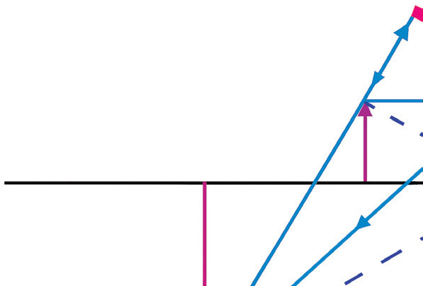
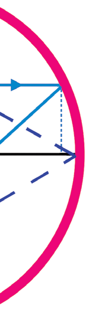

Derivation
3.
Consider the ray diagram setup of Figure 4.30
- (a) Place an object AB at a distance from the pole.
- (b) The image forms at a distance .
- (c) The focal length is the distance from P to F (principal focus).
4.
Identify similar triangles
- (a) (Triangle 1): (object triangle) and (image triangle) are similar
- (i) (from angle of incidence = angle of reflection).
- (ii) Both are right-angled.
- (b) (Triangle 2): (Mirror-focal triangle) and (Image-focal triangle) are similar
- (i) (Vertically opposite angles)
- (ii) Both are right-angled.

Figure 4.30: Geometry of a concave mirror
A
B
C
D
E
F
P
A1
B1

5.
Set up a ratio
From
6.
Compare Equations (1) and (2) :
vf=uv-uf
This equation applies to both concave and convex mirrors with both convention signs.
Sign convention for the mirror equation
Recall, the characteristics of images formed by spherical mirrors depend on whether the mirror is concave or convex. The size, position and nature of the image also depend on the position of the object in front of the mirror. To determine the image properties, there is a need to indicate the